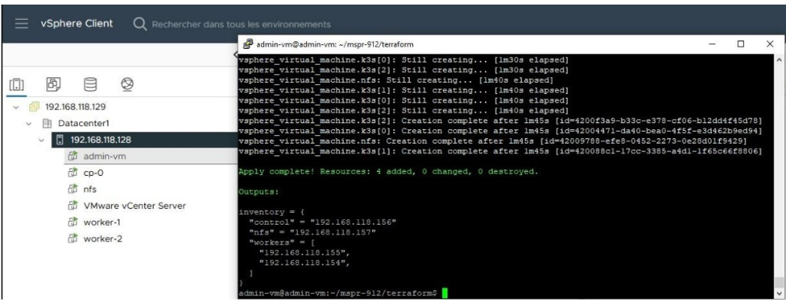

DEVOPS & INFRASTRUCTURE AS CODE
Gestion Agile & Déploiement IaC (Projet COGIP)
#Terraform #Ansible #Packer #Kubernetes_K3s #vSphere #Scrum #Jira
> 1. Présentation du Projet
Conception, automatisation et sécurisation d'une infrastructure cloud native pour l'hébergement d'un ERP Odoo client. Le projet a été mené selon la méthode Agile Scrum (3 Sprints) en s'appuyant sur une chaîne complète d'Infrastructure as Code (IaC) pour garantir la reproductibilité et la haute disponibilité.
> 2. Déploiement Automatisé (Terraform @ VMware vSphere)
TERRAFORM APPLY COMPLETE & PROVISIONNEMENT DES VM SUR VSPHERE

Cliquez sur la capture d'écran pour l'afficher en haute résolution.
> 3. Méthodologie & Réalisations Techniques
-
Masterisation (Packer) : Création automatisée d'images virtuelles Linux Debian durcies et standardisées (Golden Images) prêtes pour l'hébergement cloud.
-
Provisionnement d'Infrastructure (Terraform) : Déploiement automatisé sur VMware vSphere des nœuds du cluster (control plane cp-0, stockage nfs, workers worker-1 et worker-2) avec allocation dynamique des IP et ressources.
-
Configuration & Orchestration (Ansible & K3s) : Déploiement de playbooks Ansible pour installer le cluster Kubernetes K3s, configurer les montages persistants NFS et déployer l'application ERP Odoo avec reverse proxy Traefik.
-
Pilotage Scrum (Jira) : Organisation des rituels agiles (Sprint Planning, Daily Stand-ups, Sprint Reviews, Retrospectives) et suivi de la vélocité via des burndown charts.